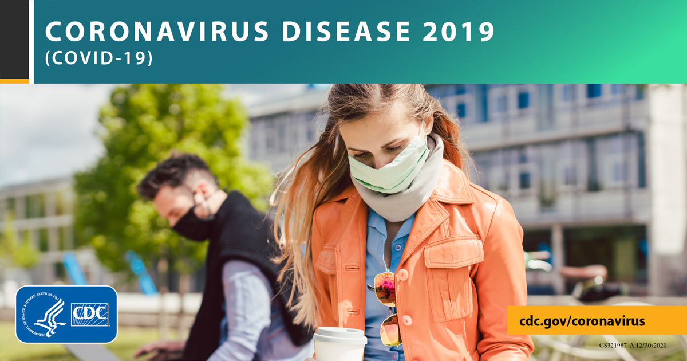

Households Living in Close Quarters
This guidance is intended for people living together in close quarters, such as people who share a small apartment, or for people who live in the same household with large or extended families.
People of any age who have certain underlying medical conditions are at risk for getting COVID-19.Some groups have an increased risk for severe illness from coronavirus disease 2019 (COVID-19).The following information is aimed to help you protect those who are most vulnerable in your household.
If your household includes one or more vulnerable individuals then all family members should act as if they, themselves, are at higher risk.Learn how to protect yourself and others.
Family members should leave only when absolutely necessary.Essential errands include going to the grocery store, pharmacy, or medical appointments that cannot be delayed (e.g., infants or individuals with serious health conditions in need of aid).If you must leave the house, please do the following:
If necessary to use public transportation:
If necessary to ride in a car with members of different households:
Those who are at increased risk for severe illness should avoid caring for the children in their household, if possible.If people at higher risk must care for the children in their household, the children in their care should not have contact with individuals outside the household.Members of the household who are at high risk should also avoid taking care of sick people of any age who are sick.
Provide a separate bedroom and bathroom for the person who is sick, if possible.If you cannot provide a separate room and bathroom, try to separate them from other household members as much as possible.Keep people at higher risk separated from anyone who is sick.
If possible, have only one person in the household take care of the person who is sick.This caregiver should be someone who is not at higher risk for severe illness and should minimize contact with other people in the household.
If you need to share a bedroom with someone who is sick, make sure the room has good air flow.
If you need to share a bathroom with someone who is sick, the person who is sick should clean and disinfect the frequently touched surfaces in the bathroom after each use.If this is not possible, the person who does the cleaning should:
Posted On: 2020-09-11T00:00:00

Content Date: 2020-09-11
Download Date: 2021-04-17
Document ID: L0C04AAXR